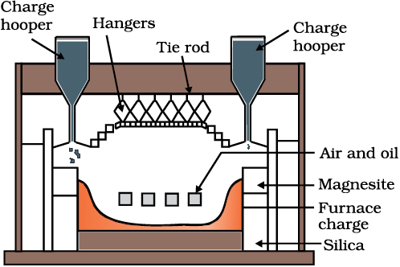

Fe2O3 (s) + xH2O(g) (6.6)
Fe2O3 (s) + xH2O(g) (6.6)6.3 Extraction of Crude metal from Concentrated Ore
The concentrated ore must be converted into a form which is suitable for reduction. Usually the sulphide ore is converted to oxide before reduction. Oxides are easier to reduce (for the reason see box). Thus isolation of metals from concentrated ore involves two major steps viz.,
(a) conversion to oxide, and
(b) reduction of the oxide to metal.
(a) Conversion to oxide
(i) Calcination: Calcinaton involves heating when the volatile matter escapes leaving behind the metal oxide:
Fe2O3.xH2O(s) Fe2O3 (s) + xH2O(g) (6.6)
ZnCO3 (s) ZnO(s) + CO2(g) (6.7)
CaCO3.MgCO3(s) CaO(s) + MgO(s ) + 2CO2(g) (6.8)

Fig. 6.3: A section of a modern reverberatory furnace
(ii) Roasting: In roasting, the ore is heated in a regular supply of air in a furnace at a temperature below the melting point of the metal. Some of the reactions involving sulphide ores are:
2ZnS + 3O2 → 2ZnO + 2SO2 (6.9)
2PbS + 3O2 → 2PbO + 2SO2 (6.10)
2Cu2S + 3O2 → 2Cu2O + 2SO2 (6.11)
The sulphide ores of copper are heated in reverberatory furnace. If the ore contains iron, it is mixed with silica before heating. Iron oxide ‘slags of’* as iron silicate and copper is produced in the form of copper matte which contains Cu2S and FeS.
FeO + SiO2 → FeSiO3 (6.12)
(slag)
The SO2 produced is utilised for manufacturing H2SO4 .
(b) Reduction of oxide to the metal
Reduction of the metal oxide usually involves heating it with some other substance acting as a reducing agent (C or CO or even another metal). The reducing agent (e.g., carbon) combines with the oxygen of the metal oxide.
MxOy + yC → xM + y CO (6.13)
Some metal oxides get reduced easily while others are very difficult to be reduced (reduction means electron gain or electronation). In any case, heating is required. To understand the variation in the temperature requirement for thermal reductions (pyrometallurgy) and to predict which element will suit as the reducing agent for a given metal oxide (MxOy), Gibbs energy interpretations are made.